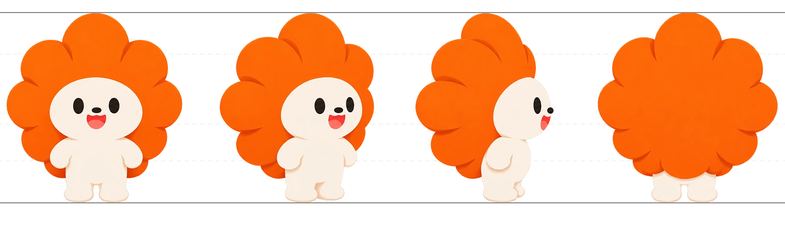
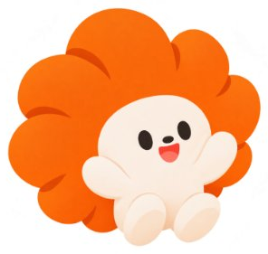
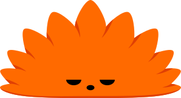

DESIGN KEYWORD
편안한 색감과 친근한 캐릭터, 명확한 화면 구성으로
다시 시작하는 순간의 부담을 낮춰요.
01
02
03
SOFT
PLayFUL
round
부드러운
친근한
편안한
둥근 카드와 버튼, 부드러운 색상을 활용해
긴장감을 낮추고 편안한 화면을 구성합니다.
마스코트의 표정 변화와 리워드 모션을 통해
미션의 성공과 성취를 시각적으로 전달합니다.
둥근 형태와 부드러운 곡선으로 시각적 부담을
덜고, 편안하고 친근한 경험을 제공합니다.
COLOR
주황색은 다시 시작하는 용기와 활력을 표현하고, 흰색과 밝은 회색은
배경에 사용해 중요한 정보와 행동이 잘 드러나도록 했어요.
#FF6A00
#FFB480
#FFCBA6
#FFE1CC
#FAFAFA
#FFFFFF
TYPOGRAPHY
타이틀은 둥근 형태의 나눔스퀘어라운드로 친근함을 전하고,
본문은 프리텐다드로 편안하고 명확하게 읽을 수 있도록 했어요.
TITLE
다시
시작해 오름
나눔 스퀘어 라운드
EXTRA BOLD
TEXT
새로운 기회를
향해 한 걸음 내딛기
프리텐다드
SEMI BOLD / MEDIUM
LOGO
둥근 소문자로 친근함을, 오르미를 닮은 심볼로 성장의 가능성을
담았어요. 주황색은 다시 시작하는 용기와 에너지를 전해요.
SYNCOPATE
oreum
떠오르는 해처럼 새로운 시작을, 한 걸음씩 오르듯 작은 성장을 의미합니다. 오름은
각자의 속도로 일상을 회복하고 새로운 가능성을 향해 나아가는 여정을 함께합니다.
CHARACTER
오르미
“천천히라도 괜찮아! 함께 한 걸음씩 오르자!”
누군가 잠시 쉬어가더라도 조급해하지 않고,
각자의 속도로 조금씩 나아가는 과정을 소중히 여긴다.
작은 변화가 모여 새로운 가능성을 만들고,
그 안에서 함께 성장하는 것을 가장 좋아한다.

TURN AROUND

POSE


CHARACTER EVOLUTION
웅크린 가시가 햇살이 될 때까지
해의 형상과 고슴도치를 결합한 오르미는 사용자가 성장해 갈수록
떠오르는 해처럼 뾰족했던 가시가 둥글고 부드럽게 변합니다.
1단계
2단계
3단계
4단계
웅크린 오르미
고개 내민 오르미
고개 든 오르미
활짝 핀 오르미